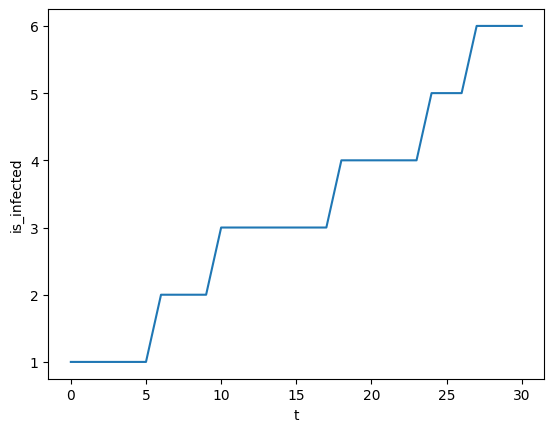

Minimal Example
This shows a very simple desease spread simulation
[1]:
import random
import popy
import seaborn as sns
# for reproducibilty
random.seed(1337)
Let’s set up two kinds of agents. They are very similar - except one is healthy and the other one is infected.
[2]:
class InfectionAgent(popy.Agent):
def setup(self):
self.is_infected = False
def infect(self):
if not self.is_infected:
return
for contact in self.contacts():
# if person is infected:
# every contact in in every
# shared location is infected with .1 propability
p_infect = random.random()
if p_infect < 0.1:
contact.is_infected = True
We can now create our Population and assign agents to some locations. Agents can only interact if they share at least one location.
[3]:
class Population:
def __init__(self, model) -> None:
self.model = model
# create 5 agents - none of them are infected right now
self.agents = popy.AgentList(model, 6, InfectionAgent)
# set one random agent to be infected
self.agents.random().is_infected = 1
# create 3 different locations
self.locations = popy.LocationList(model, 3, popy.Location)
# home 1
self.agents[0].add_location(self.locations[0])
self.agents[1].add_location(self.locations[0])
self.agents[2].add_location(self.locations[0])
# school
self.agents[2].add_location(self.locations[1])
self.agents[3].add_location(self.locations[1])
# home 2
self.agents[3].add_location(self.locations[2])
self.agents[4].add_location(self.locations[2])
self.agents[5].add_location(self.locations[2])
self.agents.shuffle()
def update(self) -> None:
self.agents.visit_locations(self.model)
Finally, we can specify our model like we do in agentpy.
[4]:
class MyModel(popy.Model):
def setup(self):
self.population = Population(self)
def step(self):
self.population.agents.infect()
def update(self):
self.population.agents.record("is_infected")
def end(self):
pass
Let’s now row run our model:
[5]:
model = MyModel(parameters={"steps": 30})
results = model.run()
Completed: 30 steps
Run time: 0:00:00.022031
Simulation finished
And plot the amount of infected agents at each timestep:
[6]:
df = results.arrange_variables()
data = df.groupby("t").is_infected.sum().reset_index()
_ = sns.lineplot(data, x="t", y="is_infected")
